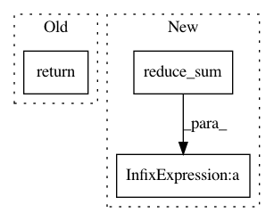

67bd0ba416366c2b31006a5bf951ae9586135f7c,tf_unet/layers.py,,pixel_wise_softmax,#,60
Before Change
with tf.name_scope("pixel_wise_softmax"):
exponential_map = tf.exp(output_map)
evidence = tf.add(exponential_map,tf.reverse(exponential_map,[False,False,False,True]))
return tf.div(exponential_map,evidence, name="pixel_wise_softmax")
def pixel_wise_softmax_2(output_map):
with tf.name_scope("pixel_wise_softmax_2"):
exponential_map = tf.exp(output_map)
After Change
with tf.name_scope("pixel_wise_softmax"):
max_axis = tf.reduce_max(output_map, axis=3, keepdims=True)
exponential_map = tf.exp(output_map - max_axis)
normalize = tf.reduce_sum(exponential_map, axis=3, keepdims=True)
return exponential_map / normalize
def cross_entropy(y_,output_map):
with tf.name_scope("xent"):
return -tf.reduce_mean(y_*tf.log(tf.clip_by_value(output_map,1e-10,1.0)), name="cross_entropy")
In pattern: SUPERPATTERN
Frequency: 3
Non-data size: 3
Instances
Project Name: jakeret/tf_unet
Commit Name: 67bd0ba416366c2b31006a5bf951ae9586135f7c
Time: 2018-06-25
Author: joel.akeret@gmail.com
File Name: tf_unet/layers.py
Class Name:
Method Name: pixel_wise_softmax
Project Name: THUNLP-MT/THUMT
Commit Name: 62d2ea56ae4a090aa68baf133137982a836700bd
Time: 2018-01-25
Author: playinf@stu.xmu.edu.cn
File Name: thumt/utils/search.py
Class Name:
Method Name: create_inference_graph
Project Name: astorfi/TensorFlow-World
Commit Name: 23ade1b117a04e86e2058a148ec944fb2e624536
Time: 2017-09-21
Author: mmulholland@ets.org
File Name: codes/2-basics_in_machine_learning/linear_regression/code/linear_regression.py
Class Name:
Method Name: loss